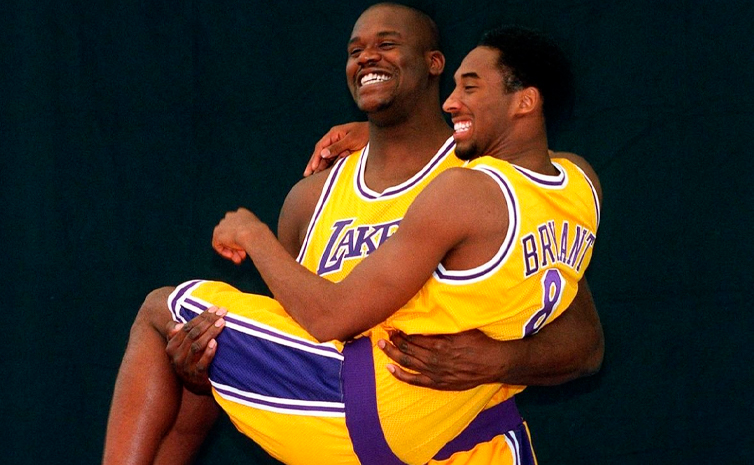

Como basquetbolista, Shaquille O’Neal dejó una huella imborrable en la NBA gracias a su combinación única de fuerza, tamaño y agilidad.
Fue elegido como número uno del Draft de 1992 por los Orlando Magic, y desde su llegada revolucionó la franquicia, llevándola a disputar las Finales de 1995, un hecho histórico para un equipo tan joven.
Más tarde, su consagración llegó en Los Angeles Lakers, donde formó una de las duplas más recordadas de la liga junto a Kobe Bryant.
Con ellos conquistó tres campeonatos consecutivos (2000, 2001 y 2002), siendo además elegido MVP de las Finales en las tres ocasiones, algo que muy pocos jugadores han logrado.
En 2006 consiguió su cuarto anillo con los Miami Heat, consolidando su estatus como ganador en diferentes equipos.
A lo largo de su carrera fue 15 veces All-Star, tres veces MVP del All-Star Game, cuatro veces campeón, MVP de la temporada 2000, líder anotador en dos temporadas y parte del NBA 50th Anniversary Team y NBA 75th Anniversary Team.
Su impacto fue tan grande que no solo se lo recuerda por los números, sino también por haber redefinido el rol del pívot en el baloncesto moderno.